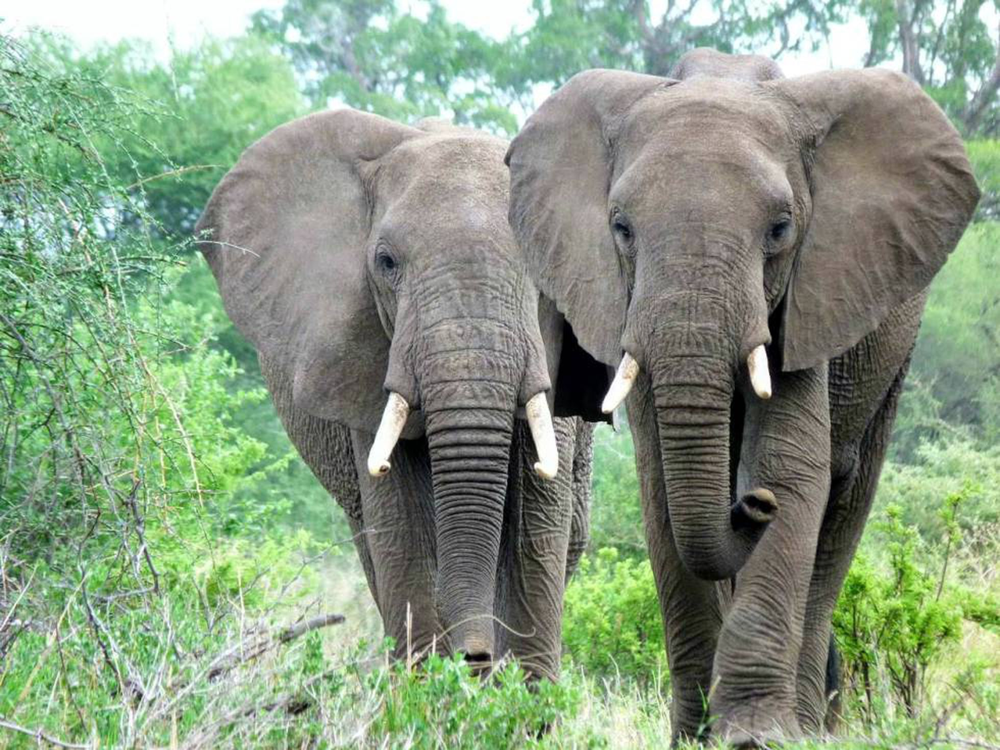

Elefante
(Elephantidae)

Hábitat
Los elefantes de los bosques africanos habitan la densa selva tropical de África occidental y central, mientras que los elefantes de la sabana africana habitan principalmente en las sabanas boscosas y los pastizales del África subsahariana.
Caracteristicas
-
Son animales voluminosos, cuyos cuerpos pueden medir cerca de 4 metros de alto y varias toneladas de peso (en promedio, unos 7500 kg).
-
Su cerebro, el más grande de todos los animales terrestres, pesa por sí solo 5 kg, y le confiere al elefante una inteligencia comparable con un cetáceo o algunos primates.
-
Su trompa, el rasgo más conocido de la especie, posee miles de músculos (40.000 o 100.000 según las diferentes fuentes) y es una sensible prolongación de la nariz, capaz de percibir una inmensa gama de olores lejanos (los elefantes poseen el mejor olfato de todas las especies), recoger comida del suelo, aspirar y verter agua en su boca o en su cuerpo para refrescarse, o emitir sonidos de diversa gama, incluídos los infrasónicos.
-
Al mismo tiempo, poseen pabellones auriculares enormes, que les permiten un agudo sentido del oído. Poseen en cambio una mala visión, con sus ojos a los costados de la cabeza, lo cual los hace particularmente sensibles a los movimientos bruscos y repentinos, a los que suelen responder con agresividad.
-
Los machos de la especie poseen dos gigantescos colmillos de marfil, prolongación de sus dientes incisivos, que sobresalen de su mandíbula superior y que estos animales usan para abrirse camino en la espesura, escarbar en el suelo, marcar su territorio o atacar y defenderse, en caso de que haga falta. Compuestos de marfil, han sido muy cotizados en la historia y son una razón por la cual se les ha dado tan extensa cacería.